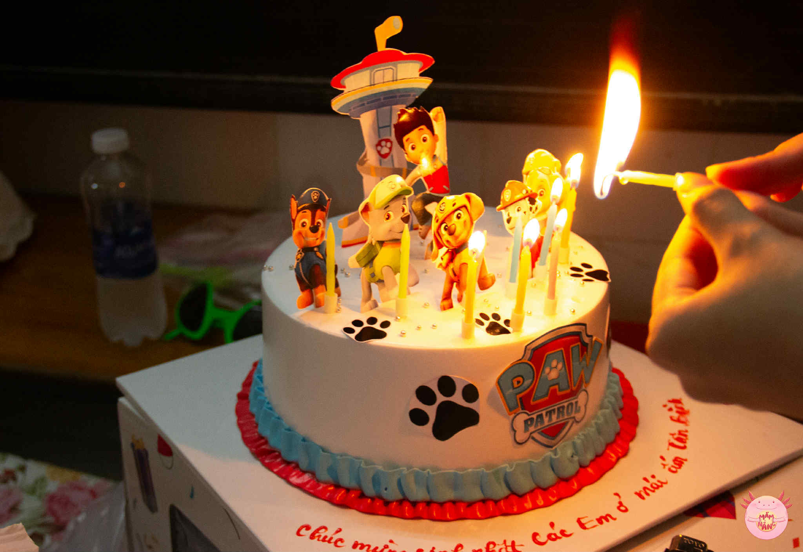
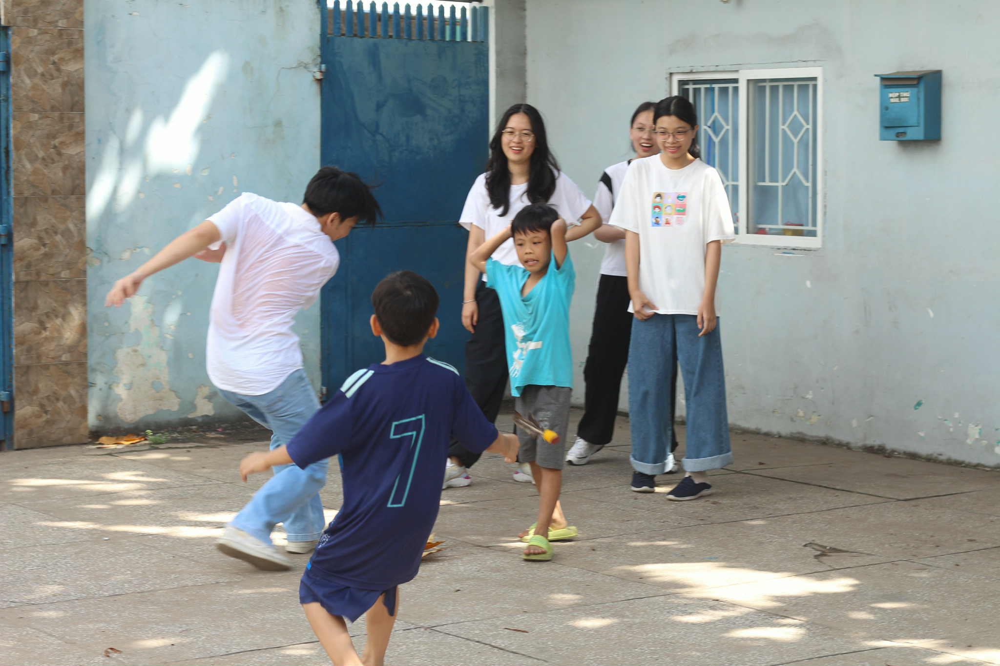
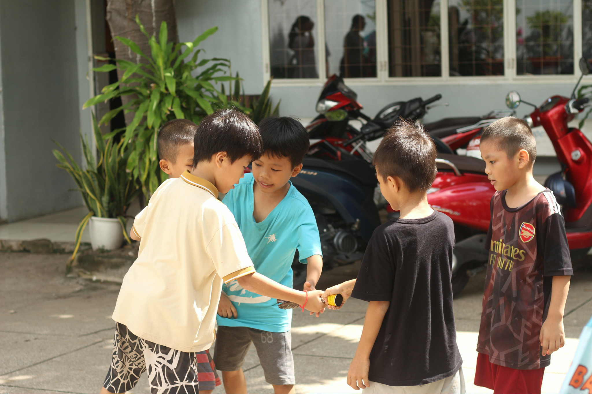
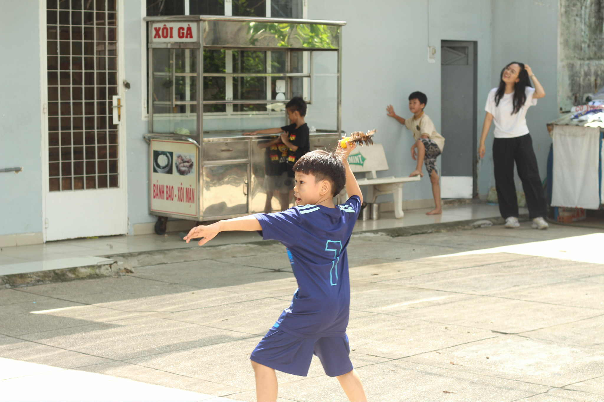
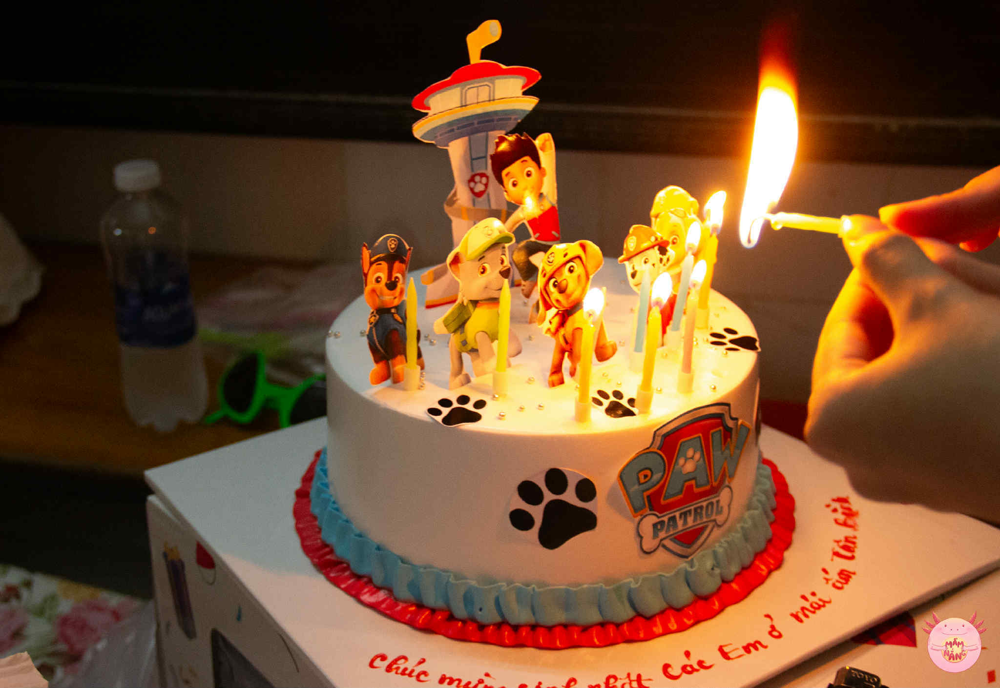
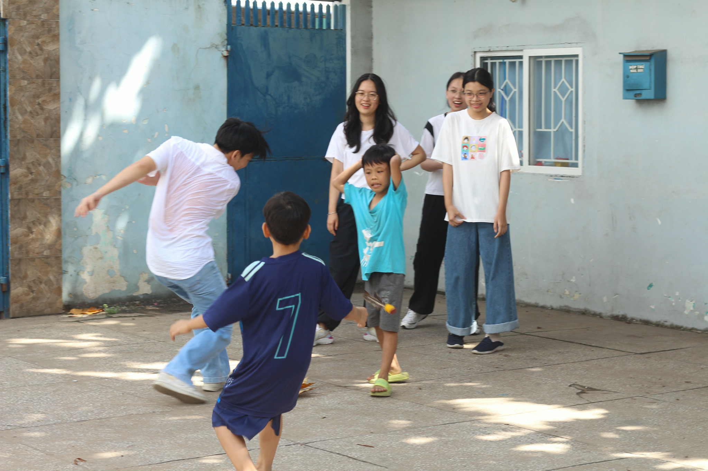
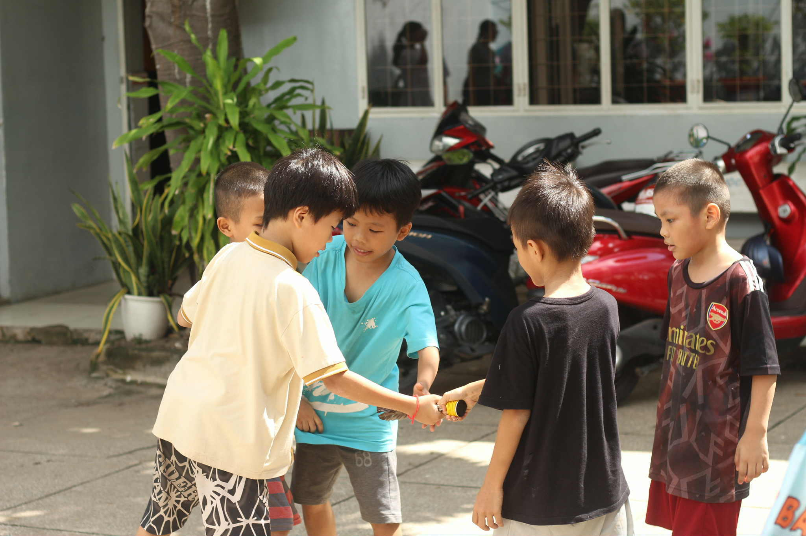
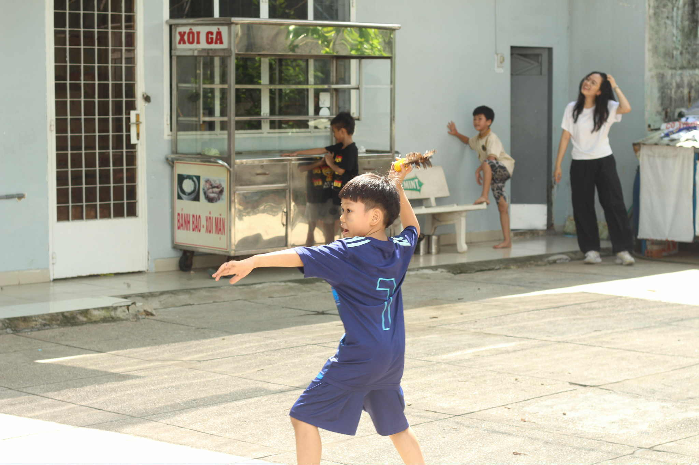

Mầm nắng
What?
Mầm Nắng is a youth-led initiative dedicated to supporting children in remote highland areas through education and community engagement. By combining on-site volunteer activities with creative storytelling, the project provides essential learning materials while raising awareness about educational inequality.
Why?
Many children in isolated regions lack access to basic educational tools and opportunities. We believe that every child deserves the chance to learn, grow, and dream — no matter where they live. Through hands-on support and authentic storytelling, we aim to bridge this gap and inspire others to join in building a more equitable future.
Our goals
- Organize field trips to underserved regions to deliver essential learning materials and gifts (200+ distributed to date).
- Foster meaningful connections between volunteers and local students through interactive educational and cultural exchanges.
- Use photography and storytelling to document the impact, sharing the journeys with an audience of 3,000+ online followers to raise awareness and inspire continued community involvement.
 






